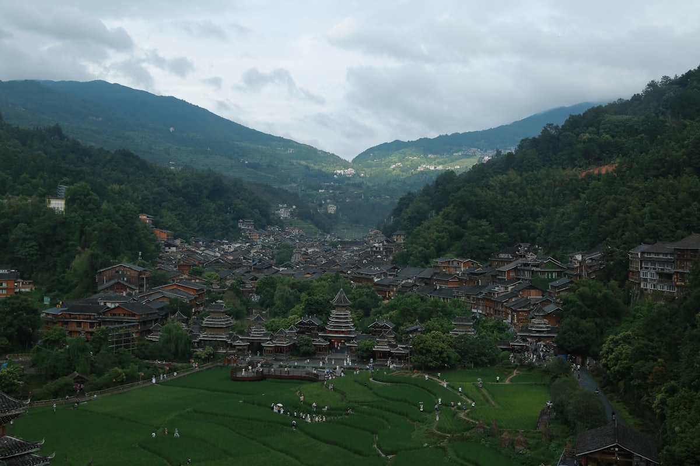
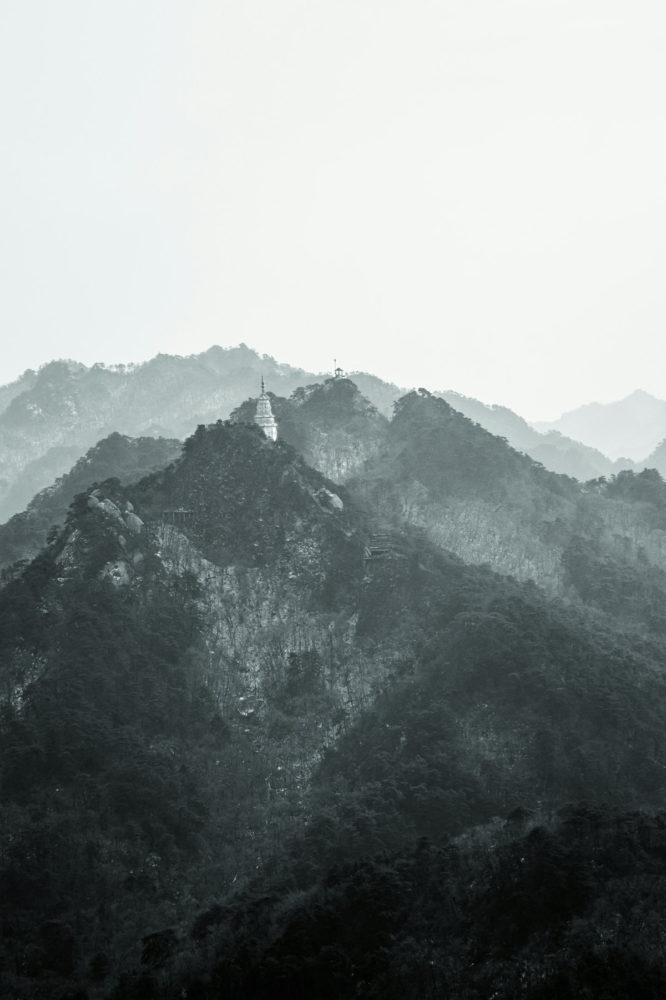
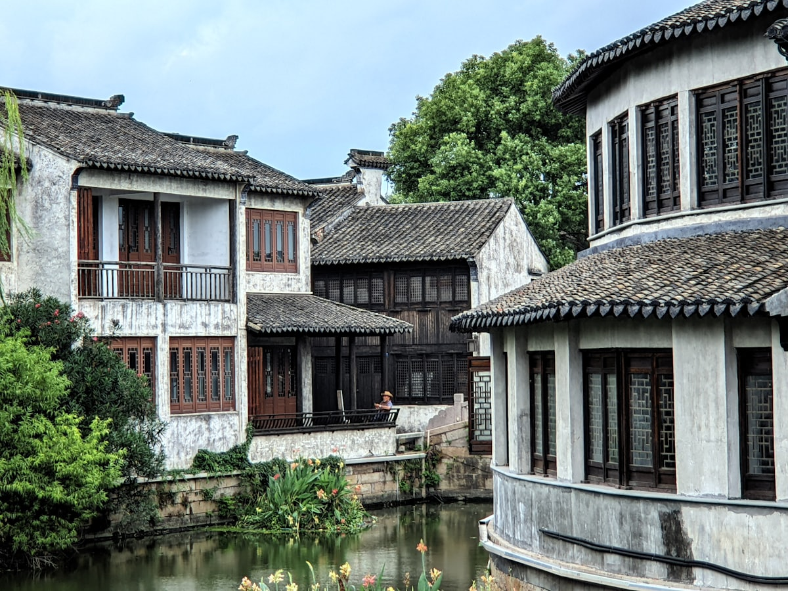
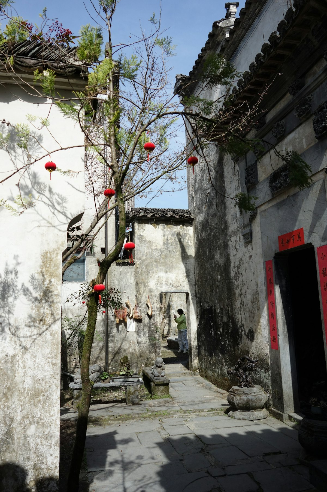
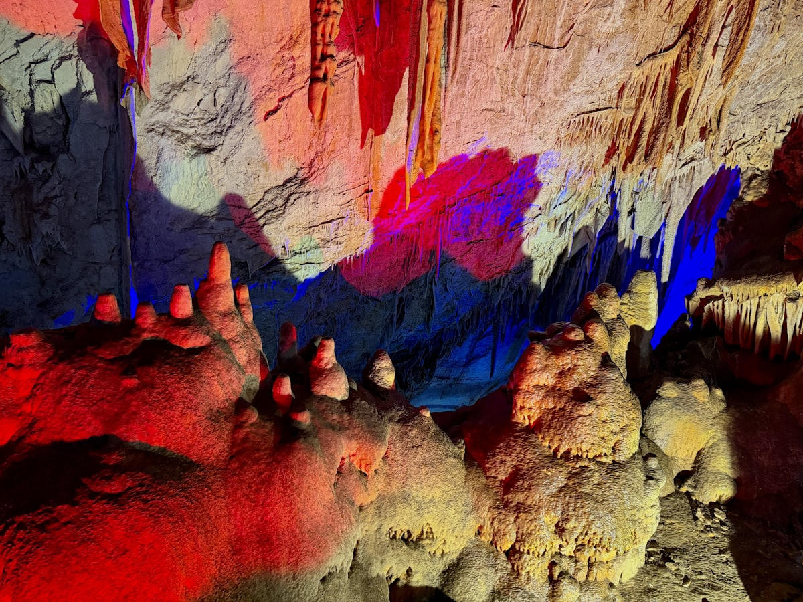
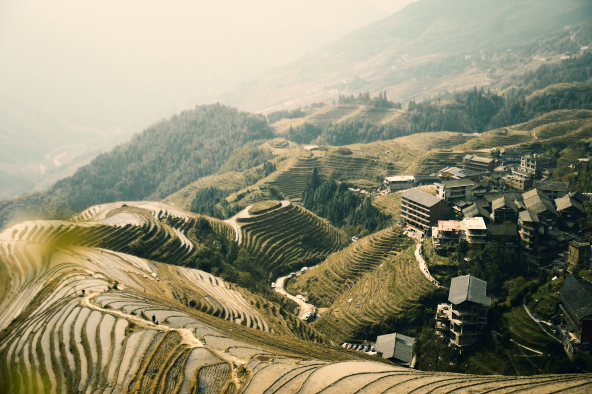

1核心结论
贵阳
→
黄果树
→
荔波小七孔
→
西江苗寨
→
镇远古镇
→
梵净山
→
返程
🕐 10 天怎么安排最合理
贵州是「无桥不成路、无洞不藏奇」的喀斯特王国，高铁串起全省。贵阳入、梵净山出（或反向），沿途覆盖黄果树瀑布、荔波小七孔、西江千户苗寨、镇远古镇、梵净山五大招牌。全程大交通以高铁为主，景点间多用旅游直通车衔接，每天一个大景区，节奏张弛有度。
| 事项 | 结论 |
|---|---|
| 事项 | 结论 |
| 推荐方案 | 10 天 9 晚（贵阳→安顺→荔波→凯里→镇远→铜仁） |
| 返程约束 | 第 10 天下午/晚间返程（梵净山可在铜仁南站返程） |
| 行程链 | 贵阳 → 黄果树 → 荔波 → 西江 → 镇远 → 梵净山 |
| 预算（人均） | 经济 3200–4200 ／ 标准 5200–6800 ／ 舒适 8500–11000 |
| 三件提前事 | ① 黄果树/梵净山门票提前 1–3 天预约 ② 苗寨住宿旺季爆满早订 ③ 梵净山分时段限流入园 |
| 季节提醒 | 5–10 月水大景美；7–8 月贵州是避暑胜地，比重庆成都凉快 |
| 交通卡 | 高铁+景区直通车组合，贵阳地铁扫码 |
⚠️ 两个容易忽略的点
① 梵净山实名限量 + 分时段入园，旺季门票秒空，提前 3 天抢票；② 黄果树含大瀑布/陡坡塘/天星桥三区，面积大要走一整天，别只逛大瀑布就撤。
2推荐行程 · 10 天版
以下为 10 天 9 晚的推荐节奏。整体「贵阳进、铜仁出」顺向推进，每天一大景区。
| 日期 | 行程 | 过夜地 | 主题 |
|---|---|---|---|
| D1 抵贵阳 | 甲秀楼 + 青云市集，宿贵阳 | 贵阳 | 抵达 + 夜市 |
| D2 | 黄果树瀑布（三区全天）→ 宿安顺/贵阳 | 安顺 | 中国第一大瀑布 |
| D3 | 织金洞（可选）→ 回贵阳 → 黔灵山 | 贵阳 | 洞中奇观 |
| D4 | 贵阳→荔波（高铁），小七孔景区 | 荔波 | 绿野仙踪 |
| D5 | 大七孔 → 荔波→西江千户苗寨（晚看万家灯火） | 西江苗寨 | 千户苗寨 |
| D6 | 西江→镇远古镇（青龙洞、舞阳河夜景） | 镇远 | 太极古镇 |
| D7 | 镇远→梵净山脚（铜仁方向），宿山下 | 梵净山脚 | 朝圣准备 |
| D8 | 梵净山全天（红云金顶）→ 宿铜仁 | 铜仁 | 天空之城 |
| D9 | 回贵阳：青岩古镇 + 甲秀楼夜景 | 贵阳 | 古城收尾 |
| D10 返程 | 上午采购，下午返程 | — | 收尾 |
🧭 路线可调原则
该环线顺向走（贵阳→铜仁），也可反着走。若时间压缩，可砍掉织金洞与青岩，把 D3/D9 变成机动日。梵净山下雨天金顶封闭，需留 1 天缓冲。
3逐小时时间线
以下为 10 天全程的逐小时执行时间线，可当作「当天打开照着走」的清单。标注 ※ 的可选项视体力与天气取舍。
D1 · 抵达贵阳
甲秀楼 + 青云市集
🚇 抵达日
| 时间 | 事项 |
|---|---|
| 14:00–17:00 | 抵达贵阳（高铁贵阳北/龙洞堡机场），地铁/打车入住市区 |
| 17:30–18:30 | 办理入住（推荐喷水池/大十字，近地铁 1/2 号线） |
| 19:00–21:00 | 甲秀楼（免费）：南明河畔地标，夜景必看 |
| 21:00 | 青云路夜市：丝娃娃、肠旺面、恋爱豆腐果 |
贵阳夏季均温 23℃，是避暑首选；甲秀楼亮灯后 20:30 最出片。
D2 · 黄果树瀑布
中国第一大瀑布一日
💦 黄果树日
| 时间 | 事项 |
|---|---|
| 07:00 | 贵阳北→安顺西（高铁约 30 分钟），转景区直通车 |
| 08:30–13:00 | 大瀑布（门票+观光车参考价 220 元）：水帘洞穿越、丰水期气势磅礴 |
| 13:00–14:00 | 景区内午餐 |
| 14:30–17:00 | 陡坡塘瀑布（《西游记》片头取景地）+ 天星桥（水上石林） |
| 18:00 | 宿安顺或回贵阳 |
黄果树景区三区可乘观光车串联；7–9 月丰水期水帘洞可能关闭，先查官方通知。
D3 · 织金洞 + 黔灵山
洞中奇观一日
🕳 溶洞日
| 时间 | 事项 |
|---|---|
| 08:00 | 高铁贵阳—织金北（约 1 小时），转车到织金洞（参考价 120 元）：地下宫殿、钟乳石奇观 |
| 13:00 | 返回贵阳午餐 |
| 15:00–17:30 | 黔灵山公园（参考价 5 元）：猕猴放养、弘福寺 |
| 18:30 | 晚餐：酸汤鱼/丝娃娃 |
织金洞常年恒温，洞内凉爽；若时间紧可跳过织金洞，D3 直接在贵阳慢逛。
D4 · 荔波小七孔
绿野仙踪一日
💧 小七孔日
| 时间 | 事项 |
|---|---|
| 08:00 | 贵阳北→荔波站（高铁约 1.5 小时），转车到景区东门 |
| 10:30–17:00 | 荔波小七孔（门票+观光车参考价 170 元）：卧龙潭、翠谷、水上森林、小七孔古桥 |
| 18:00 | 宿荔波县城或景区周边 |
| 19:00 | 晚餐：荔波樟江夜市（酸汤鱼、米豆腐） |
小七孔自上而下走（卧龙潭→小七孔桥）省力；6–9 月丰水期水最美，翠谷瀑布可踩水。
D5 · 大七孔 + 西江千户苗寨
苗寨灯火一夜
🏮 苗寨日
| 时间 | 事项 |
|---|---|
| 08:00–10:30 | 大七孔（参考价 55 元）：天生桥、恐怖峡，人少清净 |
| 11:00 | 午餐后，荔波→凯里南（高铁约 1.5 小时），转车到西江千户苗寨（约 1 小时） |
| 15:30–18:00 | 西江千户苗寨（参考价 90 元）：吊脚楼层层叠叠，苗族博物馆 |
| 19:00–21:00 | 观景台看万家灯火，长桌宴体验 |
苗寨夜景是灵魂，入住半山观景客栈；长桌宴记得体验「高山流水」敬酒礼。
D6 · 镇远古镇
太极古镇一日
🏯 镇远日
| 时间 | 事项 |
|---|---|
| 09:00 | 西江→凯里南（约 1 小时），高铁到镇远（约 40 分钟） |
| 12:00–16:00 | 镇远古镇（免费）：舞阳河太极图古城、青龙洞古建筑群（参考价 60 元） |
| 16:30–18:30 | 乘船游舞阳河（参考价 100 元）看两岸悬崖古寺 |
| 19:00 | 宿镇远，古城夜景 + 烤鱼夜宵 |
镇远是 2200 年历史古城，白天看古建、晚上看灯光倒影；酸汤鱼和烤鱼是必吃。
D7 · 梵净山脚
朝圣准备一日
⛰ 山脚日
| 时间 | 事项 |
|---|---|
| 09:00 | 镇远→铜仁南（高铁约 1 小时），转车到梵净山（江口方向）约 1 小时 |
| 13:00–17:00 | 寨沙侗寨（免费）或太平河漫步，适应环境 |
| 18:00 | 宿梵净山脚下（江口县城/寨沙） |
| 20:00 | 早睡，次日登梵净山需早起排队 |
梵净山次日需按预约时段入园，提前买好门票+观光车（参考价 140 元+20 元）。索道往返参考价 160 元。
D8 · 梵净山
天空之城一日
☁️ 梵净山日
| 时间 | 事项 |
|---|---|
| 07:00 | 按预约时段入园，观光车+索道上山 |
| 08:30–13:00 | 红云金顶、蘑菇石、老金顶，看云海与佛教圣山 |
| 13:00–14:00 | 山上简餐 |
| 14:30–16:30 | 下山，返铜仁市区 |
| 18:00 | 宿铜仁，晚餐：铜仁社饭/米豆腐 |
红云金顶险峻，恐高者选蘑菇石+老金顶路线；下雨铁索打滑，景区会临时关闭金顶。
D9 · 回贵阳 + 青岩古镇
古城收尾一日
🏰 青岩日
| 时间 | 事项 |
|---|---|
| 08:00 | 铜仁南→贵阳北（高铁约 1.5–2 小时） |
| 12:00–16:30 | 青岩古镇（参考价 10 元）：600 年石头古镇，状元蹄、玫瑰糖 |
| 17:30–19:00 | 回市区，甲秀楼夜景补拍 |
| 19:30 | 晚餐：贵阳老字号 |
青岩古镇门票 10 元，联票 80 元含小景点；状元蹄（卤猪蹄）是特色必吃。
D10 · 返程
采购伴手礼 + 回家
🚄 返程日
| 时间 | 事项 |
|---|---|
| 08:30–11:30 | 采购伴手礼：老干妈、都匀毛尖、苗族银饰/刺绣 |
| 11:30–12:30 | 午餐 |
| 13:00–16:00 | 退房，赴高铁站/机场返程 |
| 16:30 | 抵达出发地，结束贵州 10 天行程；银饰等易碎品注意防压 |
伴手礼推荐：老干妈、都匀毛尖、湄潭翠芽、苗银饰品、腊肉。
4景点图鉴
必去（必去）/ 顺路（顺路）/ 可跳过（可跳过）。
必去
黄果树瀑布 参考价 220 元
亚洲第一大瀑布，水帘洞 + 陡坡塘 + 天星桥三区。
 必去
必去荔波小七孔 参考价 170 元
世界自然遗产，卧龙潭碧水、水上森林、古桥。

必去西江千户苗寨 参考价 90 元
世界最大苗族聚居村寨，吊脚楼夜景万家灯火。

必去梵净山 参考价 140 元
天空之城，红云金顶、蘑菇石、云海佛光。

顺路镇远古镇 免费
舞阳河太极古城，青龙洞悬空古寺。

顺路青岩古镇 10 元
600 年石头古镇，状元蹄与古城墙。

可跳过织金洞 参考价 120 元
中国最美溶洞之一，地下宫殿钟乳石。

可跳过万峰林 70 元
徐霞客笔下的峰林田园，兴义方向。
图片为 Unsplash 主题图（黄果树、小七孔、苗寨等为贵州实景），用于页面配图。更多免费景点：甲秀楼、黔灵山、青云路夜市、寨沙侗寨。
5路线地图
点击左侧节点可在地图上定位；点击地图 marker 会高亮对应节点。坐标为 WGS-84 转 GCJ-02 纠偏后标注。
6预算明细（三档）
以下为单人、不含购物的估算；门票为参考价，以现场为准。黄果树与梵净山旺季门票限量，需提前预约。交通按高铁进出估算。
| 项目 | 经济（3200–4200） | 标准（5200–6800） | 舒适（8500–11000） |
|---|---|---|---|
| 往返交通 | 高铁约 700–1100 | 高铁/飞机约 1100–1800 | 飞机+接送约 2000–2800 |
| 省内段（高铁） | 约 500–700 | 700–1000 | 高铁+包车 1500–2500 |
| 住宿（9 晚） | 青旅/快捷 700–1100 | 连锁/客栈 1600–2400 | 星级/观景房 3800–5200 |
| 门票 | 基础景点约 700 | 含索道等约 1000 | 全含约 1300+ |
| 餐饮（10 天） | 600–800 | 1200–1600 | 2000–2800 |
💰 标准档示例账单（人均约 6300 元）
往返 1400 + 省内段 800 + 住宿 9 晚 1500（双人分 3000）+ 门票 1000 + 餐饮 1300 + 市内交通 300 ≈ 6300 元。主要浮动项是高铁票时段与苗寨/梵净山住宿。
7备选方案
7.1 只看精华的 6 天版
- D1 贵阳+甲秀楼
- D2 黄果树
- D3 小七孔
- D4 西江苗寨
- D5 镇远
- D6 返程（梵净山留给下次）
7.2 亲子版调整
带娃推荐：黄果树水帘洞、小七孔踩水、黔灵山看猴、多彩贵州风演出；梵净山对低龄儿童偏累，可替换为铜仁大明边城。
7.3 兴义方向版
若对喀斯特峰林更感兴趣，可在 D3 后改赴兴义：万峰林、马岭河大峡谷、万峰湖，人称「贵州的小桂林」。
8交通与住宿
8.1 贵州 ⇄ 各地 交通
| 方式 | 时长 | 参考价 | 备注 |
|---|---|---|---|
| 高铁（推荐） | 视出发地 2–10h | 二等座 150–1200 元 | 贵阳北为枢纽，辐射全省 |
| 飞机 | 视出发地 1–3h | 300–1600 元 | 龙洞堡机场，地铁/高铁接驳 |
| 自驾 | 视出发地 | 高速+油费 | 黔东南山路多，注意落石路段 |
⚠️ 交通核心提醒
贵州高铁网很密集（贵阳—安顺 30 分钟、贵阳—荔波 1.5h、贵阳—凯里 40 分钟），全程高铁+景区直通车最顺。山区弯道多，自驾看风景但慢。
8.2 市内交通
- 贵阳地铁：1/2 号线覆盖市区，扫码乘车
- 高铁：贵阳北—安顺/荔波/凯里/镇远/铜仁，班次密集
- 景区直通车：高铁站直达黄果树、小七孔、梵净山等
- 出租车/网约车：市区 10–30 元
- 苗寨观光车：西江内部观光车 5–20 元
8.3 住宿区域推荐
| 区域 | 价格/晚 | 优点 | 短板 |
|---|---|---|---|
| 贵阳（喷水池/大十字） | 快捷 250–450 | 近地铁与夜市，交通枢纽 | 景区大多不在市区 |
| 安顺市区 | 快捷 200–350 | 近黄果树，比景区内便宜 | 往返景区需车 |
| 西江苗寨 | 客栈 300–800 | 观景房看夜景无敌 | 旺季一房难求 |
| 梵净山脚（江口/寨沙） | 客栈 200–500 | 近景区大门，次日早入园 | 配套较少 |
9美食清单
🍽 必吃经典
- 酸汤鱼（凯里红酸汤）
- 丝娃娃、肠旺面、牛肉粉
- 恋爱豆腐果、洋芋粑
- 烤鱼、苗家腊肉
🥮 伴手礼
- 老干妈、都匀毛尖
- 湄潭翠芽、石阡苔茶
- 苗族银饰/蜡染
- 青岩玫瑰糖、镇远道菜
🍢 小吃街
- 青云路夜市（贵阳）
- 二七路小吃街
- 镇远古城夜市
- 西江长桌宴
📍 去哪吃
- 贵阳（酸汤鱼/丝娃娃）
- 镇远古城（烤鱼+夜景）
- 西江苗寨（长桌宴）
- 青岩古镇（状元蹄）
⚠️ 美食防坑
① 酸汤鱼分白酸（米汤）与红酸（番茄），红酸更开胃；② 苗家「高山流水」敬酒量力而行；③ 景区内的「野生菌火锅」认准正规店，野菌必须彻底煮熟。
10出行贴士
10.1 行前清单
- 身份证、充电宝
- 防滑鞋（瀑布栈道+梵净山）
- 雨衣/雨伞（山区多阵雨）
- 防晒霜、薄外套（早晚凉）
- 黄果树、梵净山提前预约
- 西江苗寨住宿提前 1 周订
- 下载贵州高铁/景区小程序
- 梵净山按预约时段入园
10.2 防踩坑
🧳 四条提醒
① 梵净山分时段限流，迟到会进不去；② 苗寨门票 90 元含 4 段观光车，别重复买；③ 贵州菜偏酸辣，肠胃不好备药；④ 自驾注意雾区与落石，雨天减少山路。
🌟 一句话总结
贵州是「一座被山水雕刻的公园省」——黄果树听瀑布咆哮、小七孔看碧水柔情、苗寨看万家灯火、梵净山登天空之城。高铁入黔，10 天把中国最浓缩的山水奇观串起来，性价比很高。